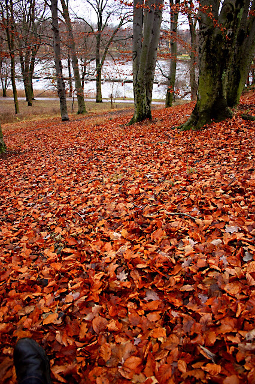

sus zapatos traen polvo de otros caminos
sus zapatos traen polvo de otros caminos
El sol en los ojos
la brisa en la cara,
sus zapatos traen polvo de otros caminos;
no se sabe qué busca
ni de dónde ha venido.
“Yo llevo el amargo regusto de las despedidas,
los salados besos prometidos de lo que está por venir
y el agridulce sabor de los días que dejo atrás.”
La mirada recta y transparente,
el paso tranquilo y firme
de quienes saben que, aunque el reloj no detiene su latir,
el tiempo está de su lado.
“Lo poco que sé, va conmigo
en el bolsillo del pantalón
y el sincero afecto de los míos
lo guardo en el de mi camisa:
muy cerca del corazón.”
El roble y el encinar,
el naranjo y el olivo,
el girasol y el trigal,
bordean los pasos de su caminar;
hacia aquella agreste montaña
él se dirigirá.
“Si existe un tal destino
el mío está allá en el horizonte
porque aquel monte que tú señalas
clava en mi pecho su mirar,
porque en mis entrañas
rugen desafiantes las olas de algún enloquecido mar,
porque es mi voz
la brutalmente arrancada hoja
que el viento arrastra de aquí para allá.
Así pues, el camino es mi hogar.
Le vi pasar
y no sé aún de qué color es su mirar.
Sólo comprendí
que en sus zapatos lleva el polvo de muchos caminos,
porque es el camino su hogar.
León, 11 de septiembre de 2007
